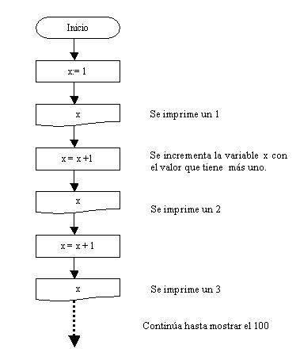
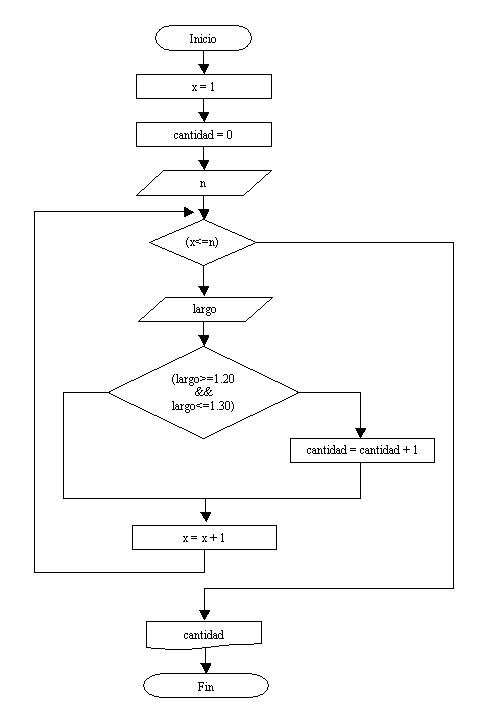

Hasta ahora hemos empleado estructuras SECUENCIALES y CONDICIONALES. Existe otro tipo de estructuras tan importantes como las anteriores que son las estructuras REPETITIVAS.
Una estructura repetitiva permite ejecutar una instrucción o un conjunto de instrucciones varias veces.
Una ejecución repetitiva de sentencias se caracteriza por:
- La o las sentencias que se repiten.
- El test o prueba de condición antes de cada repetición, que motivará que se repitan o no las sentencias.
Estructura repetitiva while.
Representación gráfica de la estructura while:

No debemos confundir la representación gráfica de la estructura repetitiva while (Mientras) con la estructura condicional if (Si)
Funcionamiento: En primer lugar se verifica la condición, si la misma resulta verdadera se ejecutan las operaciones que indicamos por la rama del Verdadero.
A la rama del verdadero la graficamos en la parte inferior de la condición. Una línea al final del bloque de repetición la conecta con la parte superior de la estructura repetitiva.
En caso que la condición sea Falsa continúa por la rama del Falso y sale de la estructura repetitiva para continuar con la ejecución del algoritmo.
El bloque se repite MIENTRAS la condición sea Verdadera.
Importante: Si la condición siempre retorna verdadero estamos en presencia de un ciclo repetitivo infinito. Dicha situación es un error de programación lógico, nunca finalizará el programa.
Problema 1:
Realizar un programa que imprima en pantalla los números del 1 al 100.
Sin conocer las estructuras repetitivas podemos resolver el problema empleando una estructura secuencial. Inicializamos una variable con el valor 1, luego imprimimos la variable, incrementamos nuevamente la variable y así sucesivamente.
Diagrama de flujo:

Si continuamos con el diagrama veríamos que es casi interminable. Emplear una estructura secuencial para resolver este problema produce un diagrama de flujo y un programa en C++ muy largo.
Ahora veamos la solución empleando una estructura repetitiva while:

Es muy importante analizar este diagrama:
La primera operación inicializa la variable x en 1, seguidamente comienza la estructura repetitiva while y disponemos la siguiente condición ( x <= 100), se lee MIENTRAS la variable x sea menor o igual a 100.
Al ejecutarse la condición retorna VERDADERO porque el contenido de x (1) es menor o igual a 100.
Al ser la condición verdadera se ejecuta el bloque de instrucciones que contiene la estructura while. El bloque de instrucciones contiene una salida y una operación.
Se imprime el contenido de x, y seguidamente se incrementa la variable x en uno.
La operación x=x + 1 se lee como "en la variable x se guarda el contenido de x más 1". Es decir, si x contiene 1 luego de ejecutarse esta operación se almacenará en x un 2.
Al finalizar el bloque de instrucciones que contiene la estructura repetitiva se verifica nuevamente la condición de la estructura repetitiva y se repite el proceso explicado anteriormente.
Mientras la condición retorne verdadero se ejecuta el bloque de instrucciones; al retornar falso la verificación de la condición se sale de la estructura repetitiva y continua el algoritmo, en este caso finaliza el programa.
Lo más difícil es la definición de la condición de la estructura while y que bloque de instrucciones se van a repetir. Observar que si, por ejemplo, disponemos la condición x >=100 ( si x es mayor o igual a 100) no provoca ningún error sintáctico pero estamos en presencia de un error lógico porque al evaluarse por primera vez la condición retorna falso y no se ejecuta el bloque de instrucciones que queríamos repetir 100 veces.
No existe una RECETA para definir una condición de una estructura repetitiva, sino que se logra con una práctica continua solucionando problemas.
Una vez planteado el diagrama debemos verificar si el mismo es una solución válida al problema (en este caso se debe imprimir los números del 1 al 100 en pantalla), para ello podemos hacer un seguimiento del flujo del diagrama y los valores que toman las variables a lo largo de la ejecución:
x
1
2
3
4
.
.
100
101 Cuando x vale 101 la condición de la estructura repetitiva retorna falso,
en este caso finaliza el diagrama.
Importante: Podemos observar que el bloque repetitivo puede no ejecutarse ninguna vez si la condición retorna falso la primera vez.
La variable x debe estar inicializada con algún valor antes que se ejecute la operación x=x + 1 en caso de no estar inicializada aparece un error de compilación.
Programa:
#include<iostream>
using namespace std;
void main()
{
int x;
x = 1;
while (x <= 100)
{
cout <<x;
cout <<" - ";
x = x + 1;
}
cin.get();
}
Recordemos que un problema no estará 100% solucionado si no hacemos el programa en C++ que muestre los resultados buscados.
Como el problema no requiere la entrada de datos por teclado luego podemos detener la ejecución del programa con una sola llamada a get():
cin.get();
Este proyecto lo puede descargar en un zip desde este enlace : WhileNumeros1a100
Probemos algunas modificaciones de este programa y veamos que cambios se deberían hacer para:
1 - Imprimir los números del 1 al 500. 2 - Imprimir los números del 50 al 100. 3 - Imprimir los números del -50 al 0. 4 - Imprimir los números del 2 al 100 pero de 2 en 2 (2,4,6,8 ....100).
Respuestas:
1 - Debemos cambiar la condición del while con x<=500.
2 - Debemos inicializar x con el valor 50.
3 - Inicializar x con el valor -50 y fijar la condición x<=0.
4 - Inicializar a x con el valor 2 y dentro del bloque repetitivo incrementar a x en 2
( x = x + 2 )
Problema 2:
Escribir un programa que solicite la carga de un valor positivo y nos muestre desde 1 hasta el valor ingresado de uno en uno.
Ejemplo: Si ingresamos 30 se debe mostrar en pantalla los números del 1 al 30.
Es de FUNDAMENTAL importancia analizar los diagramas de flujo y la posterior codificación en C++ de los siguientes problemas, en varios problemas se presentan otras situaciones no vistas en el ejercicio anterior.
Diagrama de flujo:

Podemos observar que se ingresa por teclado la variable n. El operador puede cargar cualquier valor.
Si el operador carga 10 el bloque repetitivo se ejecutará 10 veces, ya que la condición es “Mientras x<=n ”, es decir “mientras x sea menor o igual a 10”; pues x comienza en uno y se incrementa en uno cada vez que se ejecuta el bloque repetitivo.
A la prueba del diagrama la podemos realizar dándole valores a las variables; por ejemplo, si ingresamos 5 el seguimiento es el siguiente:
n x
5 1 (Se imprime el contenido de x)
2 " "
3 " "
4 " "
5 " "
6 (Sale del while porque 6 no es menor o igual a 5)
Programa:
#include<iostream>
using namespace std;
void main()
{
int n,x;
cout <<"Ingrese el valor final:";
cin >>n;
x=1;
while (x <= n)
{
cout <<x;
cout <<" - ";
x = x + 1;
}
cin.get();
cin.get();
}
Los nombres de las variables n y x pueden ser palabras o letras (como en este caso)
La variable x recibe el nombre de CONTADOR. Un contador es un tipo especial de variable que se incrementa o disminuye con valores constantes durante la ejecución del programa.
El contador x nos indica en cada momento la cantidad de valores impresos en pantalla.
Este proyecto lo puede descargar en un zip desde este enlace : WhileHastaNumeroIngresado
Problema 3:
Desarrollar un programa que permita la carga de 10 valores por teclado y nos muestre posteriormente la suma de los valores ingresados y su promedio.
Diagrama de flujo:

En este problema, a semejanza de los anteriores, llevamos un CONTADOR llamado x que nos sirve para contar las vueltas que debe repetir el while.
También aparece el concepto de ACUMULADOR (un acumulador es un tipo especial de variable que se incrementa o disminuye con valores variables durante la ejecución del programa)
Hemos dado el nombre de suma a nuestro acumulador. Cada ciclo que se repita la estructura repetitiva, la variable suma se incrementa con el contenido ingresado en la variable valor.
La prueba del diagrama se realiza dándole valores a las variables:
valor suma x promedio
0 0
(Antes de entrar a la estructura repetitiva estos son los valores).
5 5 1
16 21 2
7 28 3
10 38 4
2 40 5
20 60 6
5 65 7
5 70 8
10 80 9
2 82 10
8 90 11
9
Este es un seguimiento del diagrama planteado. Los números que toma la variable valor dependerá de qué cifras cargue el operador durante la ejecución del programa.
El promedio se calcula al salir de la estructura repetitiva (es decir primero sumamos los 10 valores ingresados y luego los dividimos por 10)
Hay que tener en cuenta que cuando en la variable valor se carga el primer valor (en este ejemplo 5) al cargarse el segundo valor (16) el valor anterior 5 se pierde, por ello la necesidad de ir almacenando en la variable suma los valores ingresados.
Programa:
#include<iostream>
using namespace std;
void main()
{
int x,suma,valor,promedio;
x=1;
suma=0;
while ( x <= 10)
{
cout <<"Ingrese un valor:";
cin >>valor;
suma=suma+valor;
x=x+1;
}
promedio=suma/10;
cout <<"La suma de los 10 valores es:";
cout <<suma;
cout <<"\n";
cout <<"El promedio es:";
cout <<promedio;
cin.get();
cin.get();
}
Este proyecto lo puede descargar en un zip desde este enlace : WhileSumaValores
Problema 4:
Una planta que fabrica perfiles de hierro posee un lote de n piezas.
Confeccionar un programa que pida ingresar por teclado la cantidad de piezas a procesar y luego ingrese la longitud de cada perfil; sabiendo que la pieza cuya longitud esté comprendida en el rango de 1.20 y 1.30 son aptas. Imprimir por pantalla la cantidad de piezas aptas que hay en el lote.
Diagrama de flujo:

Podemos observar que dentro de una estructura repetitiva puede haber estructuras condicionales (inclusive puede haber otras estructuras repetitivas que veremos más adelante)
En este problema hay que cargar inicialmente la cantidad de piezas a ingresar ( n ), seguidamente se cargan n valores de largos de piezas.
Cada vez que ingresamos un largo de pieza (largo) verificamos si es una medida correcta (debe estar entre 1.20 y 1.30 el largo para que sea correcta), en caso de ser correcta la CONTAMOS (incrementamos la variable cantidad en 1)
Al contador cantidad lo inicializamos en cero porque inicialmente no se ha cargado ningún largo de medida.
Cuando salimos de la estructura repetitiva porque se han cargado n largos de piezas mostramos por pantalla el contador cantidad (que representa la cantidad de piezas aptas)
En este problema tenemos dos CONTADORES:
x (Cuenta la cantidad de piezas cargadas hasta el momento) cantidad (Cuenta los perfiles de hierro aptos)
Programa:
#include<iostream>
using namespace std;
void main()
{
int x,cantidad,n;
float largo;
x=1;
cantidad=0;
cout <<"Cuantas piezar procesará:";
cin >>n;
while (x <= n)
{
cout <<"Ingrese la medida de la pieza:";
cin >>largo;
if (largo >= 1.20 && largo <= 1.30)
{
cantidad = cantidad +1;
}
x=x + 1;
}
cout <<"La cantidad de piezas aptas son:";
cout <<cantidad;
cin.get();
cin.get();
}
Este proyecto lo puede descargar en un zip desde este enlace : WhileFabricaPiezas.zip
Problemas propuestos
Ha llegado la parte fundamental, que es el momento donde uno desarrolla individualmente un algoritmo para la resolución de problemas.
El tiempo a dedicar a esta sección EJERCICIOS PROPUESTOS debe ser mucho mayor que el empleado a la sección de EJERCICIOS RESUELTOS.
La experiencia dice que debemos dedicar el 80% del tiempo a la resolución individual de problemas y el otro 20% al análisis y codificación de problemas ya resueltos por otras personas.
Es de vital importancia para llegar a ser un buen PROGRAMADOR poder resolver problemas en forma individual.
- Escribir un programa que solicite ingresar 10 notas de alumnos y nos informe cuántos tienen notas mayores o iguales a 7 y cuántos menores.
- Se ingresan un conjunto de n alturas de personas por teclado. Mostrar la altura promedio de las personas.
- En una empresa trabajan n empleados cuyos sueldos oscilan entre $100 y $500, realizar un programa que lea los sueldos que cobra cada empleado e informe cuántos empleados cobran entre $100 y $300 y cuántos cobran más de $300. Además el programa deberá informar el importe que gasta la empresa en sueldos al personal.
- Realizar un programa que imprima 25 términos de la serie 11 - 22 - 33 - 44, etc. (No se ingresan valores por teclado)
- Mostrar los múltiplos de 8 hasta el valor 500. Debe aparecer en pantalla 8 - 16 - 24, etc.
-
Realizar un programa que permita cargar dos listas de 15 valores cada una. Informar con un mensaje cual de las dos listas tiene un valor acumulado mayor (mensajes "Lista 1 mayor", "Lista 2 mayor", "Listas iguales")
Tener en cuenta que puede haber dos o más estructuras repetitivas en un algoritmo. -
Desarrollar un programa que permita cargar n números enteros y luego nos informe cuántos valores fueron pares y cuántos impares.
Emplear el operador “%” en la condición de la estructura condicional (este operador retorna el resto de la división de dos valores, por ejemplo 11%2 retorna un 1):
if (valor%2==0) //Si el if da verdadero luego es par.
#include<iostream>
using namespace std;
void main()
{
int x,nota,conta1,conta2;
x=1;
conta1=0;
conta2=0;
while (x <= 10)
{
cout <<"Ingrese nota:";
cin >>nota;
if (nota >= 7)
{
conta1=conta1 + 1;
}
else
{
conta2=conta2 + 1;
}
x=x + 1;
}
cout <<"Cantidad de alumnos con notas mayores o iguales a 7:";
cout <<conta1;
cout <<"\n";
cout <<"Cantidad de alumons con notas menores a 7:";
cout <<conta2;
cin.get();
cin.get();
}
Este proyecto lo puede descargar en un zip desde este enlace :WhileNotaAlumnos
#include<iostream>
using namespace std;
void main()
{
int n,x;
float altura,suma,promedio;
cout <<"Cuantas personas hay:";
cin >>n;
x=1;
suma=0;
while (x <= n)
{
cout <<"Ingrese la altura:";
cin >>altura;
suma=suma + altura;
x=x + 1;
}
promedio=suma/n;
cout <<"Altura promedio:";
cout <<promedio;
cin.get();
cin.get();
}
Este proyecto lo puede descargar en un zip desde este enlace :WhileAlturaPromedio
#include<iostream>
using namespace std;
void main()
{
int n,x,conta1,conta2;
float sueldo,gastos;
cout <<"Cuantos empleados tiene la empresa:";
cin >>n;
x=1;
conta1=0;
conta2=0;
gastos=0;
while ( x<= n)
{
cout <<"Ingrese el sueldo del empleado:";
cin >>sueldo;
if (sueldo<=300)
{
conta1=conta1 + 1;
}
else
{
conta2=conta2 + 1;
}
gastos=gastos+sueldo;
x=x + 1;
}
cout <<"Cantidad de empleados con sueldos entre 100 y 300:";
cout <<conta1;
cout <<"\n";
cout <<"Cantidad de empleados con sueldos mayor a 300:";
cout <<conta2;
cout <<"\n";
cout <<"Gastos total de la empresa en sueldos:";
cout <<gastos;
cin.get();
cin.get();
}
Este proyecto lo puede descargar en un zip desde este enlace :WhileGastoSueldos
#include<iostream>
using namespace std;
void main()
{
int x,termino;
x=1;
termino=11;
while (x <= 25)
{
cout <<termino;
cout <<" - ";
x=x + 1;
termino=termino + 11;
}
cin.get();
}
Este proyecto lo puede descargar en un zip desde este enlace :WhileTerminosSerie11
#include<iostream>
using namespace std;
void main()
{
int mult8;
mult8=8;
while (mult8 <= 500)
{
cout <<mult8;
cout <<" - ";
mult8=mult8 + 8;
}
cin.get();
}
Este proyecto lo puede descargar en un zip desde este enlace :Multiplos8
#include<iostream>
using namespace std;
void main()
{
int valor,x,suma1,suma2;
x=1;
suma1=0;
suma2=0;
cout <<"Primer lista";
cout <<"\n";
while (x <= 15)
{
cout <<"Ingrese valor:";
cin >>valor;
suma1=suma1 + valor;
x=x + 1;
}
cout <<"Segunda lista";
cout <<"\n";
x=1;
while (x <= 15)
{
cout <<"Ingrese valor:";
cin >>valor;
suma2=suma2 + valor;
x=x + 1;
}
if (suma1 > suma2)
{
cout <<"Lista 1 mayor.";
}
else
{
if (suma2 > suma1)
{
cout <<"Lista2 mayor.";
}
else
{
cout <<"Listas iguales.";
}
}
cin.get();
cin.get();
}
Este proyecto lo puede descargar en un zip desde este enlace :WhileDosListasValores
#include<iostream>
using namespace std;
void main()
{
int n,x,valor,pares,impares;
x=1;
pares=0;
impares=0;
cout <<"Cuantos numeros ingresara:";
cin >>n;
while (x <= n)
{
cout <<"Ingrese el valor:";
cin >>valor;
if (valor%2 == 0)
{
pares=pares + 1;
}
else
{
impares=impares + 1;
}
x=x + 1;
}
cout <<"Cantadad de pares:";
cout <<pares;
cout <<"\n";
cout <<"Cantidad de impares:";
cout <<impares;
cin.get();
cin.get();
}
Este proyecto lo puede descargar en un zip desde este enlace :WhileCantidadParesImpares